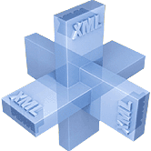

|
| ||
|
| ||
Updated September 20, 1999

Coming to Seattle, Boston, New York, Dallas, and Denver in October and November, 1999.
A one-day seminar focusing on applications integration and e-commerce using XML and Microsoft's BizTalk framework, produced by Architag International Corporation.
For more information about the seminars and venues, see the Architag Web site. You can also register for a seminar at this site.
This seminar series is aimed at developers. If you create applications that depend on sharing data between internal departments or external commerce partners, you will probably benefit by understanding XML and the BizTalk framework for XML schema development and maintenance.
By developer, we mean people who develop e-commerce applications, business-to-business data-exchange interfaces, and personalized Web site experiences. Developers are also the analysts who commission such projects and managers who find funding for them.
XML syntax: What it is; How it can be used for E-commerce; How to create schema descriptions of your data
The BizTalk Framework: How to create XML schemas for sharing information in the E-commerce chain; How to map your schemas into your business partners' schemas
Microsoft Tools: How to use Microsoft development tools to create and process XML documents and schemas
Brian Travis is President and Founder of Architag International Corporation, (http://architag.com) a consulting and training company based in Englewood, Colorado. Architag International's events division, Xmlu.com, has been holding conference events and hosting an evangelical Web site for XML since 1997.
For the past year, Brian has been working as an Architag University instructor teaching clients about XML in the U.S., Japan, Germany, and Sweden. His first book, The SGML Implementation Guide, is a real-world guide to implementing structured markup technologies. He is currently working on a second edition of his book, OmniMark At Work, Volume 1: Getting Started.
Did you find this material useful? Gripes? Compliments? Suggestions for other articles? Write us!
© 1999 Microsoft Corporation. All rights reserved. Terms of use.